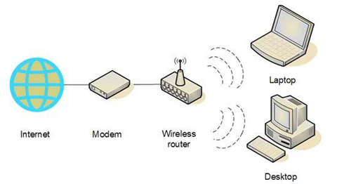

| La rete di comunicazione geografica, in sigla WAN (dall'acronimo inglese "Wide Area Network"), anche abbreviata in rete geografica, è una tipologia di rete di computer che si contraddistingue per avere un'estensione territoriale pari a una o più regioni geografiche (quindi superiore sia a quella della rete locale che a quella della rete metropolitana). |
|  |